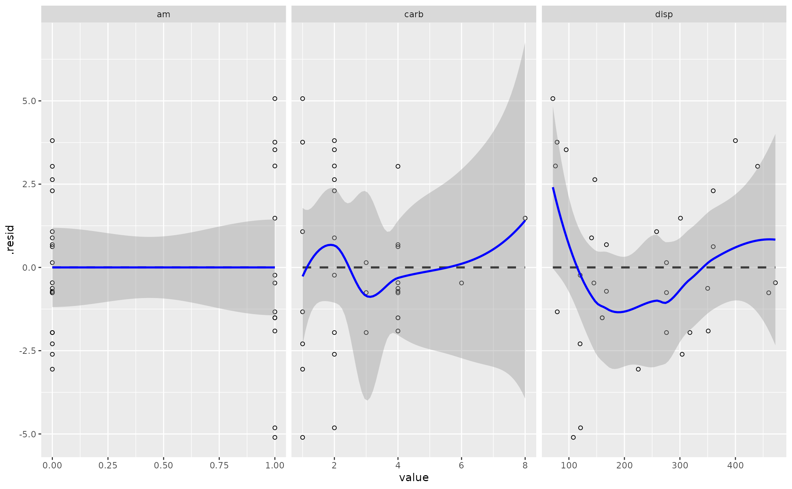
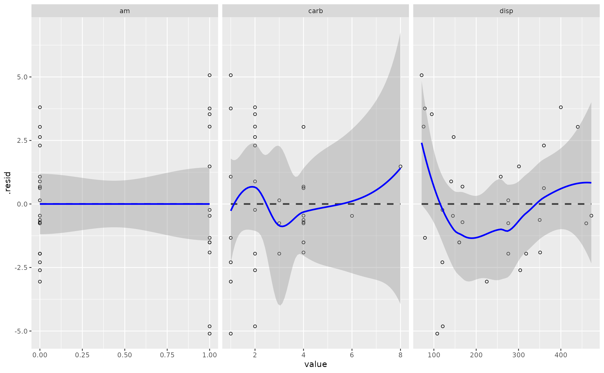

Compare Linear Smoother to LOESS Smoother for Your Linear Model
Source:R/linloess_plot.R
linloess_plot.Rdlinloess_plot() provides a visual diagnostic of the
linearity assumption of the OLS model. Provided a linear model fit by
lm() in base R, the function extracts the model frame and creates a
faceted scatterplot. For each facet, a linear smoother and LOESS smoother
are estimated over the points. Users who run this function can assess just
how much the linear smoother and LOESS smoother diverge. The more they
diverge, the more the user can determine how much the linear model is a good
fit as specified. The plot will also point to potential outliers that may
need further consideration.
Usage
linloess_plot(
mod,
resid = TRUE,
smoother = "loess",
se = TRUE,
span = 0.75,
no_dummies = FALSE,
suppress_warning = TRUE,
...
)
# S3 method for class 'linloess'
print(x, ...)Arguments
- mod
a fitted model, ideally a simple linear model
- resid
logical, defaults to
TRUE. IfFALSE, the y-axis on these plots are the raw values of the dependent variable. IfTRUE, the y-axis is the model's residuals. Either work well here for the matter at hand, provided you treat the output here as illustrative or suggestive.- smoother
defaults to "loess", and is passed to the 'method' argument for the non-linear smoother.
- se
logical, defaults to
TRUE. IfTRUE, gives standard error estimates with the assorted smoothers. IfresidisTRUE, there is no standard error for a flat line at 0.- span
a numeric, defaults to .75. An adjustment to the smoother. Higher values permit smoother lines and might be warranted in the presence of sparse pockets of the data.
- no_dummies
logical, defaults to
FALSE. IfTRUE, removes binary independent variables from the plot. IfFALSE, facets appear for binary independent variables. You should probably just set this toTRUEfor your own use cases.- suppress_warning
logical, defaults to
TRUE. IfTRUE, the plot suppresses assorted warnings from the LOESS smoother that would otherwise be cautioning you about things your eyes could otherwise see.- ...
Additional arguments (passed to the scatterplot in
linloess_plot(), not used in the print function- x
a ggplot object with this special 'linloess' class
Value
linloess_plot() returns a faceted scatterplot as a
ggplot2 object. The linear smoother is in solid blue (with blue
standard error bands) and the LOESS smoother is a dashed black line (with
gray/default standard error bands). You can add cosmetic features to it after
the fact. The function may spit warnings to you related to the LOESS smoother,
depending your data and whether you have disabled the warnings in the
function. I think these to be fine the extent to which this is really just a
visual aid and an informal diagnostic for the linearity assumption.
Details
This function makes an implicit assumption that there is no variable in the regression formula with the name ".y" or ".resid".
It may be in your interest (for the sake of rudimentary diagnostic checks) to disable the standard error bands for particularly ill-fitting linear models.
Examples
M1 <- lm(mpg ~ am + carb + disp, data=mtcars)
linloess_plot(M1)
#> `geom_smooth()` using formula = 'y ~ x'
#> `geom_smooth()` using formula = 'y ~ x'
 linloess_plot(M1, color="black", pch=21)
#> `geom_smooth()` using formula = 'y ~ x'
#> `geom_smooth()` using formula = 'y ~ x'

linloess_plot(M1, color="black", pch=21)
#> `geom_smooth()` using formula = 'y ~ x'
#> `geom_smooth()` using formula = 'y ~ x'
